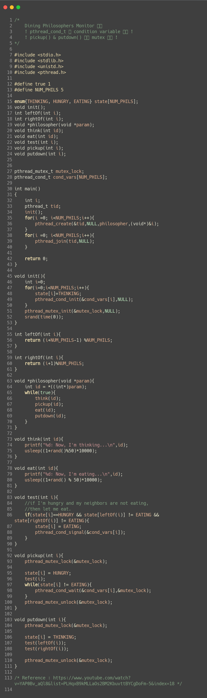

<!doctype html>
<html>
    <head>
        <meta charset="UTF-8">
        <meta name = "viewport" content = "width = device-width, initial-scale=1.0">
        <title>코드 리뷰</title>
        <link rel="stylesheet" type="text/css" href="../../css/pages.css">
    </head>
</html>

<body>
    <header>
        <h3><a href = "../../index.html">HAGUS <br> HARDWARE</a></h3> 
        <ul id="main_menu">
        </ul>

        <script src = "../../MainMenu.js"></script>
    </header>

    <section class="section">
    <div id = "tag_menu">
    </div>

    <script src = "../../TIL_tag_menu.js"></script>

    <div id = "tag_list">
        <div class="l_title"><a href = "../../TIL.html">Study. </a></div><hr>
        <div class = "l_subtitle"><div class = "title"><a href = "../../TIL.html"><strong>Code Review_Phil_M </div><div id="date">2021.6.12</div></strong></a></div>
             <!--content-->
        <div class = "content">
<br>
<pre>
!! 기말 고사 끝나면 지울 것 !!
모니터를 이용한 dining philosophers 문제 해결

<strong>!! POSIX condition variable functions !!</strong>

<strong>int pthread_cond_init(pthread_cond_t *restrict cond,
    const pthread_condattr_t *restrict attr);</strong>
<i style="font-size: x-small;"> 파라미터 : 초기화할 조건 변수, 조건 변수 속성(보통 NULL)</i>

<strong>int pthread_cond_wait(pthread_cond_t *restrict cond,
    pthread_mutex_t *restrict mutex);</strong>
<i style="font-size: x-small;"> 파라미터 : 조건을 대기할 조건 변수,조건 변수와 연결된 뮤텍스</i>

<strong>int pthread_cond_signal(pthread_cond_t *cond);</strong>
<i style="font-size: x-small;"> 파라미터 : 조건 변수</i>

<strong>int pthread_cond_destroy(pthread_cond_t *cond);</strong>
<i style="font-size: x-small;"> 파라미터 : 파괴될 조건 변수</i>

</pre>


    
        <br>
        <br>  

        </div>

    </div>

</section>

    
</body>


